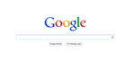
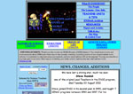

Use HTML to write a homepage for your experience with web design.
This assignment builds your fluency with HTML by continuing your practice with anchors (links) lists and tables. You will learn about different types of images used for web pages, when to use them and whether to use them in your HTML or in CSS. You will continue to practice styling your web pages with additional techniques for tables.
Now that you have a couple of challenge assignments completed it would be nice to have a single homepage that tells the world a little bit about you and your interests and links to your work for this course. For the purpose of this challenge, I will require you to add several elements to the page, but in the future you should customize it any way you want.
For this assignment, tell me again about your experience and/or interest in web design (if any). As in Challenge 1, you must list your most and least favorite web pages or sites. This time, however, you will do this with a styled table. For example:
| Site Name | Love or Hate? | Reason | Screenshot |
|---|---|---|---|
| Love it! | Everything is there, all the time, at my fingertips. |  | |
| ENSI | Eww | The 90s called and wants its web site back! |  |
Include at least 6 links in your page. Four of those could be links to the last three challenges you completed and two could be to the web sites you like and hate.
Here are the things you will have to do for the assignment:
index.html - this exact name is
important! This will be the file you will use for the challenge.
<img> element for this. You don't necessarily have to include
the screen shots like the example above. Pictures of yourself? Favorite pets? Just make
sure that they support what you are trying to say in some way (ex: “This is a picture of
me when I am designing web sites. This is a picture of my fluffy rabbit. A good web site
is like a fluffy rabbit, because it makes you feel all warm and fuzzy.”) Do not
just link to photographs or images on other web sites!. You may download and
use public domain images, provided you give proper credit. You should take and use your
own photographs for this challenge. Upload photographs to the web server using an FTP
tool such as Cyberduck, which is free and available
for Macs and Windows PCs.
background-image attribute of the body.
<a> elements) to your existing challenge
assignments and to the web sites you love and hate. If you decide to simply list the
links to your other assignments then you should use the <ul> element
to make an unordered list. Any time you find yourself making a list of
something, you should probably use one of the list types supported in HTML.
challenge04.css
You must use CSS to style the table, but you should style other parts of the page to
suit the overall look you would like.
This assignment is due by the start of class on Friday, September 23. You will be able to work on it during the X.
Examine the source HTML used by this web page (Firefox or Chrome).
Examine the CSS used by this web page.